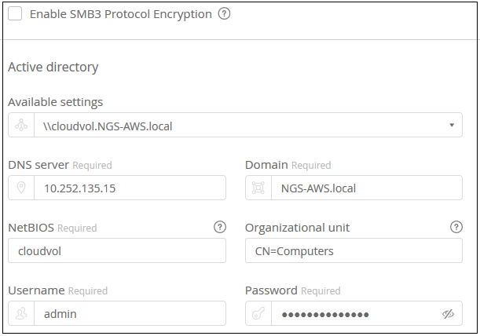
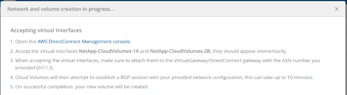
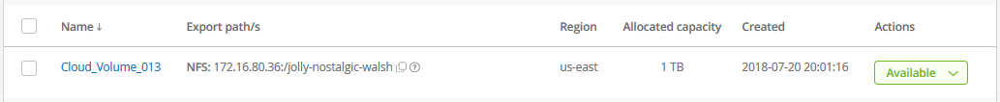

版本資訊
版本資訊
建立雲端磁碟區
 建議變更
建議變更
您可以從NetApp Cloud Orchestrator網站建立雲端磁碟區。
先決條件
您的AWS環境必須符合特定需求、才能建立第一個雲端磁碟區。對於您計畫部署雲端磁碟區的每個AWS區域、您必須擁有：
-
虛擬私有雲（VPC）
-
連線至VPC的虛擬私人閘道（VGW）
-
VPC的子網路
-
定義的路由包括將在其中執行雲端磁碟區的網路
-
（可選）Direct Connect閘道
在某個區域建立第一個雲端磁碟區時、您必須提供下列資訊：
-
* AWS帳戶ID*：12位數的Amazon帳戶識別碼、不含破折號。
-
無類別網域間路由（CIDR）區塊：未使用的IPV4 CIDR區塊。網路前置碼必須介於 /16 和 /28 之間、而且必須位於專為私有網路保留的範圍內（ RFC 1918 ）。請勿選擇與 VPC CIDR 配置重疊的網路。
-
您必須選擇要使用服務的正確地區。請參閱 "選取區域"。
如果您尚未設定所需的AWS網路元件、請參閱 "適用於Cloud Volumes Service AWS帳戶設定的NetApp解決方案" 詳細資訊請參閱指南。
*附註：*當規劃建立SMB Volume時、您必須擁有可連線的Windows Active Directory伺服器。建立磁碟區時、您將輸入此資訊。此外、請確定管理使用者能夠在指定的組織單位（ OU ）路徑中建立機器帳戶。
輸入Volume詳細資料
填寫「建立Volume」頁面頂端的欄位、以定義磁碟區名稱、大小、服務層級等。
-
登入之後 "NetApp Cloud Orchestrator" 網站上提供您在訂閱期間所提供的電子郵件地址、而且您已經擁有 "已選取區域"，單擊* Create new volume*（創建新卷*）按鈕。

-
在「Create Volume」（建立磁碟區）頁面中、選取* NFS*、* SMB*或*雙通訊協定*作為您要建立之磁碟區的傳輸協定。
-
在*名稱*欄位中、指定您要用於磁碟區的名稱。
-
在*區域*欄位中、選取您要建立磁碟區的AWS區域。此區域必須符合您在AWS上設定的區域。
-
在*時區*欄位中、選取您的時區。
-
在「* Volume path*」（* Volume路徑*）欄位中、指定您要使用或接受自動產生路徑的路徑。
-
在*服務層級*欄位中、選取磁碟區的效能等級：標準、優質*或*極致。
請參閱 "選取服務層級" 以取得詳細資料。
-
在*已分配容量*欄位中、選取所需的容量。請注意、可用的inode數量取決於分配的容量。
請參閱 "選取已分配的容量" 以取得詳細資料。
-
在* NFS版本*欄位中、視您的需求選擇* NFSv3*、* NFSv4.1*或*兩者*。
-
如果您選取雙通訊協定、可以從下拉式功能表中選取* NTFS 或 UNIX *、在*安全樣式*欄位中選取安全樣式。
安全性樣式會影響所使用的檔案權限類型、以及如何修改權限。
-
UNIX 使用 NFSv3 模式位元、只有 NFS 用戶端可以修改權限。
-
NTFS 使用 NTFS ACL 、只有 SMB 用戶端可以修改權限。
-
-
在* Show snapshot directory*（顯示快照目錄*）字段中，保留可以查看此卷的Snapshot目錄的缺省位置，或取消選中此框以隱藏Snapshot複本列表。
輸入網路詳細資料（每個AWS區域一次設定）
如果這是您第一次在此AWS區域建立雲端磁碟區、則會顯示「網路」區段、以便您將Cloud Volumes帳戶連線至AWS帳戶：
-
在「* CIDR（IPV4）*」欄位中、輸入所需的區域IPV4範圍。網路首碼的範圍必須介於/16和/28之間。網路也必須屬於專為私有網路保留的範圍（RFC 1918）。請勿選擇與 VPC CIDR 配置重疊的網路。
-
在* AWS帳戶ID*欄位中、輸入您的12位數Amazon帳戶識別碼、且不含破折號。

輸入匯出原則規則（選用）
如果您選取NFS或雙通訊協定、可以在「匯出原則」區段中建立匯出原則、以識別可存取磁碟區的用戶端：
-
在*允許的用戶端*欄位中、使用IP位址或無類別網域間路由（CIDR）來指定允許的用戶端。
-
在*存取*欄位中、選取*讀取與寫入*或*唯讀*。
-
在*傳輸協定*欄位中、選取使用者存取所用的傳輸協定（或傳輸協定、如果該磁碟區同時允許NFSv3和NFSv4.1存取）。

若要定義其他匯出原則規則、請按一下「+新增匯出原則規則」。
啟用資料加密（選用）
-
如果您選取SMB或雙傳輸協定、可以勾選「啟用SMB3傳輸協定加密」欄位的方塊來啟用SMB工作階段加密。
*注意：*如果SMB 2.1用戶端需要掛載磁碟區、請勿啟用加密。
將磁碟區與Active Directory伺服器（SMB與雙通訊協定）整合
如果您選取SMB或雙傳輸協定、您可以選擇將磁碟區與Windows Active Directory伺服器整合、或在* Active Directory *區段中整合AWS託管Microsoft AD。
在*可用設定*欄位中、選取現有的Active Directory伺服器或新增AD伺服器。
若要設定新AD伺服器的連線：
-
在* DNS server*（DNS伺服器*）欄位中、輸入DNS伺服器的IP位址。當參考多個伺服器時、請使用逗號分隔 IP 位址、例如 172.31.25.223 、 172.31.2.74 。
-
在*網域*欄位中、輸入SMB共用的網域。
使用 AWS 託管 Microsoft AD 時、請使用「目錄 DNS 名稱」欄位中的值。
-
在「* SMB伺服器NetBios *」欄位中、輸入要建立之SMB伺服器的NetBios名稱。
-
在*組織單位*欄位中、輸入「CN=電腦」以連線至您自己的Windows Active Directory伺服器。
使用AWS託管Microsoft AD時、組織單位必須以「OU=<netbios_name>」格式輸入。例如、* OID=AWSmanagedAD*。
若要使用巢狀OU、您必須先呼叫最低層級的OU、直到最高層級的OU。例如：* OU = TIRDLEVEL、OU = SECONDLEVEL、OU = FIRSTLEVEL *。
-
在*使用者名稱*欄位中、輸入Active Directory伺服器的使用者名稱。
您可以使用任何授權在您要加入SMB伺服器的Active Directory網域中建立機器帳戶的使用者名稱。
-
在*密碼*欄位中、輸入您所指定AD使用者名稱的密碼。
請參閱 "設計Active Directory網域服務的站台拓撲" 以取得有關設計最佳Microsoft AD實作的指導方針。
請參閱 "AWS目錄服務設定、搭配適用於Cloud Volumes Service AWS的NetApp功能" 使用AWS託管Microsoft AD的詳細說明指南。

您應該遵循 AWS 安全群組設定的指引、讓雲端磁碟區能夠正確地與 Windows Active Directory 伺服器整合。請參閱 "適用於 Windows AD 伺服器的 AWS 安全性群組設定" 以取得更多資訊。 *附註：*使用NFS裝載磁碟區的UNIX使用者、將會驗證為Windows使用者「root」（UNIX root）和「pcuser」（所有其他使用者）。使用NFS時、請先確認這些使用者帳戶存在於Active Directory中、然後再掛載雙傳輸協定磁碟區。
建立Snapshot原則（選用）
如果您要為此磁碟區建立快照原則、請在「快照原則」區段中輸入詳細資料：
-
選擇快照頻率：每小時、每日、每週*或*每月。
-
選取要保留的快照數量。
-
選取快照的拍攝時間。

您可以重複上述步驟、或從左側導覽區選取「Snapshot（快照）」索引標籤、以建立其他快照原則。
建立Volume
-
向下捲動至頁面底部、然後按一下*「Create Volume」（建立磁碟區）*。
如果您先前已在此區域建立雲端磁碟區、新的磁碟區會出現在「Volumes（磁碟區）」頁面中。
如果這是您在此AWS區域建立的第一個雲端磁碟區、而且您已在本頁的「網路」區段中輸入網路資訊、則會顯示進度對話方塊、指出您必須遵循的後續步驟、才能將磁碟區與AWS介面連線。

-
接受第6.4節所述的虛擬介面 "適用於Cloud Volumes Service AWS帳戶設定的NetApp解決方案" 指南。您必須在10分鐘內執行此工作、否則系統可能會逾時。
如果介面未在10分鐘內出現、則可能是組態問題、此時您應該聯絡支援部門。
在建立介面和其他網路元件之後、您建立的磁碟區會顯示在「Volumes」（磁碟區）頁面中、「Actions」（動作）欄位會列為「Available」（可用）。
繼續 "掛載雲端磁碟區"。